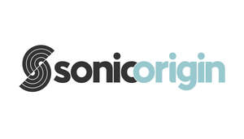
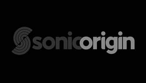

Trade Mark Journal No.2025/050 12 December 2025
UK00004266050 18 September 2025 (9,38,40,41,42)
Mark 1

Mark 2

- Class 9
- Digital audio tapes; Audio digital tapes; Software for processing images, graphics, audio, video and text; Audio editing software; Audio visual recordings; Audio and video receivers; Digital audio recorders; Audio recordings; Graphic decoders for use with audio karaoke systems; Keypads for routing audio, video, and digital signals; Audio tapes; Audio digital discs; Audio equalizers; Prerecorded digital audio tapes; Audio digitisers; Switchers for routing audio, video, and digital signals; Audio amplifiers; Routers for routing audio, video, and digital signals; Digital audio servers; Computer hardware for routing audio, video, and digital signals; Digital audio tape recorders; Wireless audio and video receivers; Computer hardware for signal processing of audio and video; Digital audio interface apparatus; Audio cassettes; Cassettes [audio]; Audio recorders; Digital audio tape players; Audio recording apparatus; Digital audio players; Audio interfaces; Audio recording equipment; Audio dubbing apparatus; Audio apparatus; Audio compressors; Pre-recorded audio tapes; Audio speakers; Blank digital audio tapes; Audio transmitters; Electronic audio signal processors for compensating sound distortion in speakers; Apparatus for downloading audio, video and data from the internet; Audio effects apparatus; Integrated audio amplifiers; Equalizers [audio apparatus]; Equalizers being audio apparatus; Pre-recorded audio cassettes; Audio discs; Audio tapes featuring music; Electronic audio crossovers; Computer software to enhance the audio-visual capabilities of multimedia applications, namely, for the integration of text, audio, graphics, still images and moving pictures; Audio receivers; Audio conferencing equipment; Audio books; Audio cables; Audio processing apparatus; Equalisers [audio apparatus]; Equalisers being audio apparatus; MPEG audio players; Audio equipment; Prerecorded music audio tapes; Prerecorded audio cassettes; Audio tape recorders; Signal processors for audio speakers; Audio mixers; Audio cable; Portable digital audio broadcasting radios; Audio loudspeaker systems; Audio electronic apparatus; Computer programs for editing images, sound and video; Prerecorded audio tapes featuring music; Audio cassette recorders; Wireless audio speakers; Audio tape cassettes; Audio analyzers; Audio visual teaching apparatus; Pre-recorded audio cassettes featuring music; Audio adaptors; Multi-room audio devices; Audio frequency amplifiers; Computer applications for car audio video navigation; Portable digital audio broadcasting [DAB] radios; Audio mixing apparatus; Computer software for controlling the operation of audio and video devices; Security apparatus for processing audio signals; Audio frequency apparatus; Audio switching apparatus; Prerecorded non-musical audio tapes; Speakers [audio equipment]; Instruments for the reduction of noise in systems for recording audio signals; Software for processing digital images; Audio tape players; Audio expanders; Control devices for car audio video navigation; Tapes for bearing audio recordings.
- Class 38
- Digital audio broadcasting; Transmission of data, audio, video and multimedia files; Audio broadcasting; Audio teleconferencing; Digital transmission services for audio and video data; Delivery of digital audio and/or video by telecommunications; Transmission of audio and video content via satellite; Video, audio and television streaming services; Transmission of audio and video content via computer networks; Transmission of audio and video content via ISDN lines; Streaming audio and video material on the Internet; Streaming of audio, visual and audiovisual material via a global computer network; Audio, video and multimedia broadcasting via the Internet and other communications networks; Transmission of data, audio, video and multimedia files, including downloadable files and files streamed over a global computer network; Rental of apparatus for the broadcast of audio signals.
- Class 40
- Duplication of audio and video recordings.
- Class 41
- Editing of audio recordings; Audio and video editing services; Audio and video recording services; Production of video and audio recordings; Audio, video and multimedia production, and photography; Audio recording services; Audio and video production, and photography; Production of audio recordings; Audio production; Audio recording and production; Digital video, audio and multimedia entertainment publishing services; Entertainment services for sharing audio and video recordings; Providing audio or video studios; Audio, film, video and television recording services; Audio recording and production services; Audio tape production services; Rental of audio recordings; Entertainment services for matching users with audio and video recordings; Production of audio master recordings; Rental of apparatus for the recording of audio signals; Rental of audio tapes; Video and audio rental services; Audio recording studio services; Editing of video recordings; Production of audio programs; Providing audio or video studio services; Audio production services.
- Class 42
- Digital watermarking; Electronic storage of digital audio files; Design of software for audio and video operators; Encoding of digital images; Electronic storage of audio files; Encryption of digital images; Encoding of digital music; Design of hardware for audio and video operators; Development of software for audio and video operators; Encryption of digital music.
Marc Gray